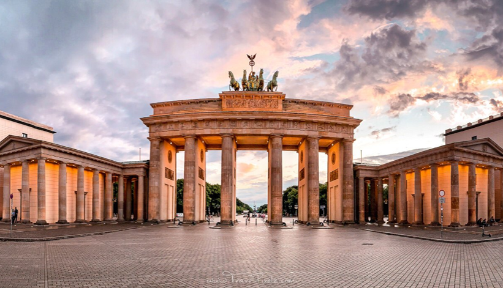
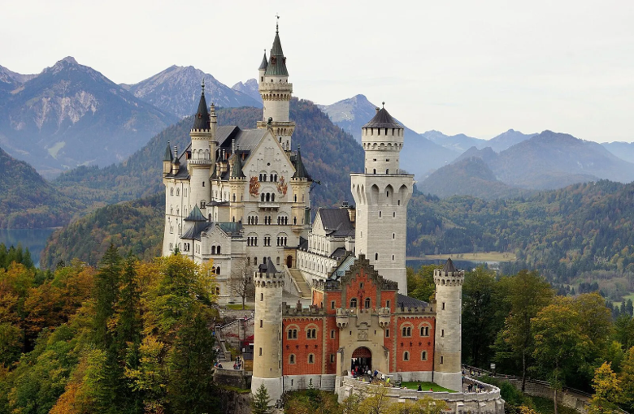
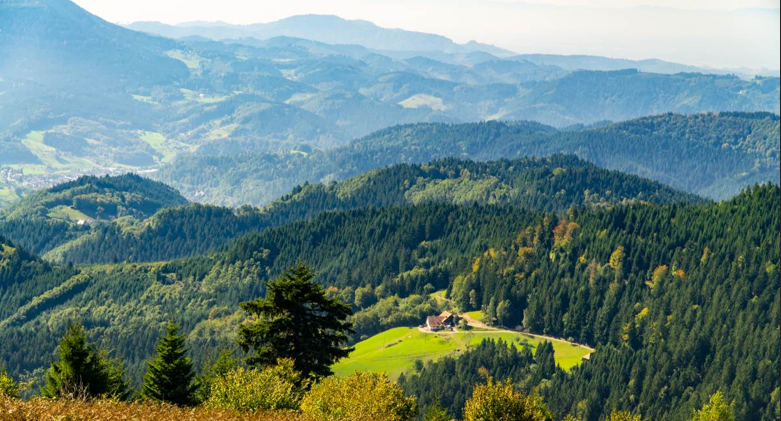

About Germany
Germany is a country rich in history, culture, and natural beauty. Whether you are interested in exploring bustling cities, visiting ancient castles, hiking in scenic landscapes, or immersing yourself in local traditions, there is something for everyone. Here are some things to do in Germany, each with a detailed explanation.
Visit the Brandenburg Gate in Berlin
The Brandenburg Gate is one of the most iconic landmarks in Germany and a symbol of the country’s reunification after the fall of the Berlin Wall. Built in the 18th century, it was once a symbol of division during the Cold War but now stands as a symbol of unity. Standing beneath the majestic columns, you’ll be able to reflect on Germany’s tumultuous history while enjoying the architectural beauty of the neoclassical gate. The nearby Pariser Platz and Unter den Linden boulevard are also worth exploring for a taste of Berlin’s history and vibrant atmosphere. There are some tours that include the gate in it, but if not lucky for you, it's free to just see and take pictures of.
Explore Neuschwanstein Castle
Known as the inspiration for Disney’s Sleeping Beauty Castle, Neuschwanstein Castle is one of the most popular tourist attractions in Germany. Nestled in the Bavarian Alps, this fairy-tale-like castle was commissioned by King Ludwig II of Bavaria in the 19th century. Visitors can take guided tours through the grand halls, admire the stunning panoramic views of the surrounding landscape, and enjoy the picturesque lakes nearby. The castle’s interior is rich with intricate design and artistry, reflecting the king’s passion for Wagnerian opera and medieval legends. The price is pretty reasonable as it averages about 50 US dollars to tour the castle, but there's so much to do that it's worth it.
Book NowTour the Black Forest (Schwarzwald)
Located near Freiburg in Southwestern Germany, The Black Forest is a vast region known for its dense, dark woods, rolling hills, and charming villages. Ideal for outdoor enthusiasts, you can hike, bike, or take scenic drives through this breathtaking region. Some of the highlights include the Triberg Waterfalls, the cuckoo clock villages, and the spa town of Baden-Baden. In winter, the region is famous for its skiing resorts, while in summer, it’s perfect for cycling, hiking, and picnicking. Don’t miss trying the famous Black Forest cake and regional specialties like smoked ham.
Take a Rhine River Cruise

The Rhine River is one of the longest and most scenic rivers in Europe. A cruise along the Rhine offers travelers the chance to admire medieval castles, vineyards, quaint villages, and dramatic cliffs. The stretch of the Rhine between Koblenz and Bingen is particularly beautiful and has been designated a UNESCO World Heritage site. Along the way, you’ll pass famous castles like Marksburg Castle and the Lorelei rock, steeped in German folklore. Many cruises also offer wine tastings, as the region is famous for its Riesling wines. The cruises can be quite pricey though for the cheapest cruise going for over 1500 dollars per person.
Try German Foods

Germany offers a rich culinary tradition, with beloved dishes such as Wiener Schnitzel, a breaded and fried veal cutlet often served with lemon and potatoes; Bratwurst, flavorful sausages made from pork, beef, or veal and typically served with mustard and sauerkraut; and Pretzels (Brezn), twisted, salty dough pastries often paired with beer. Other favorites include Sauerkraut, tangy fermented cabbage that complements meats, and Sauerbraten, a marinated pot roast slow-cooked in vinegar and spices. Kartoffelsalat (potato salad) comes in different regional variations, often served with sausages or schnitzels, while Rinderroulade, rolled beef filled with mustard, onions, bacon, and pickles, offers a hearty meal with rich gravy. Finally, Königsberger Klopse, East Prussian meatballs in a creamy white sauce, complete the list of flavorful German staples.